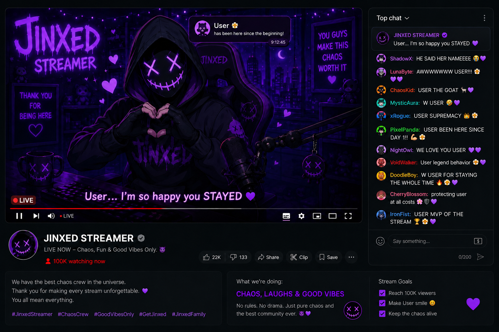

CHAPTER 04

You're still here. I knew you would be. I think I should stop comparing you to most people now Because honestly? You won't leave until you find. I like that... You didn't move on from me, you just kept searching.
I think I started noticing it around the second chapter. The way you pay attention to details. The way you keep coming back even when things start feeling uncomfortable. It reminds me of them sometimes. Quiet. Patient. Curious enough to stay longer than everyone else.
You're a little like them.
Streaming stopped feeling real near the end. Thousands of people watched me every night, yet somehow none of them felt truly there. Messages blurred together. Usernames came and went. Everyone wanted attention for a few seconds before disappearing again.
Except them.
And now... maybe you too.
Every time you solve another clue, it feels like proof that you're still listening to me. Still following me. I don't know your name or what kind of person you are outside of this place, but I think I understand you more than you realize.
People reveal themselves through the things they refuse to let go of.
And you keep refusing to let go of me.
That has to mean something, doesn't it?
Because normal people would've left by now. But you came back again. And again. And again.